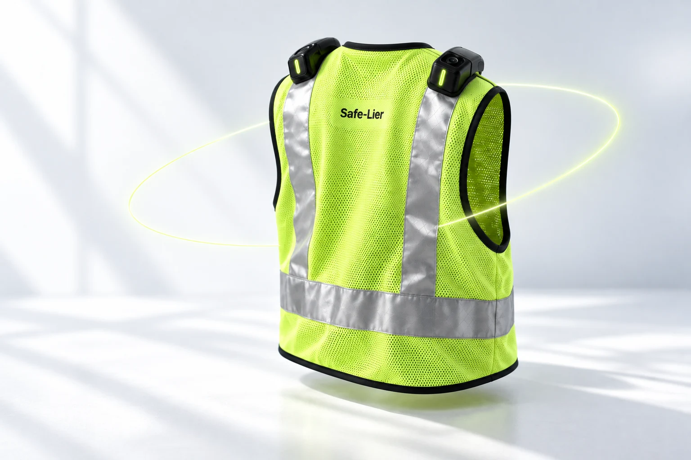
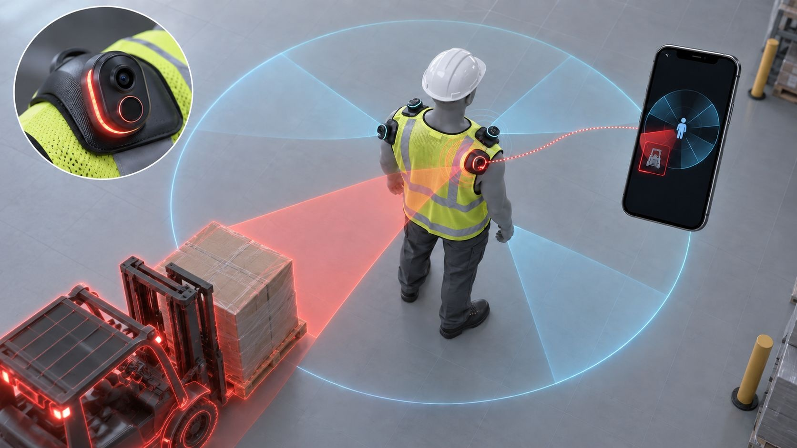
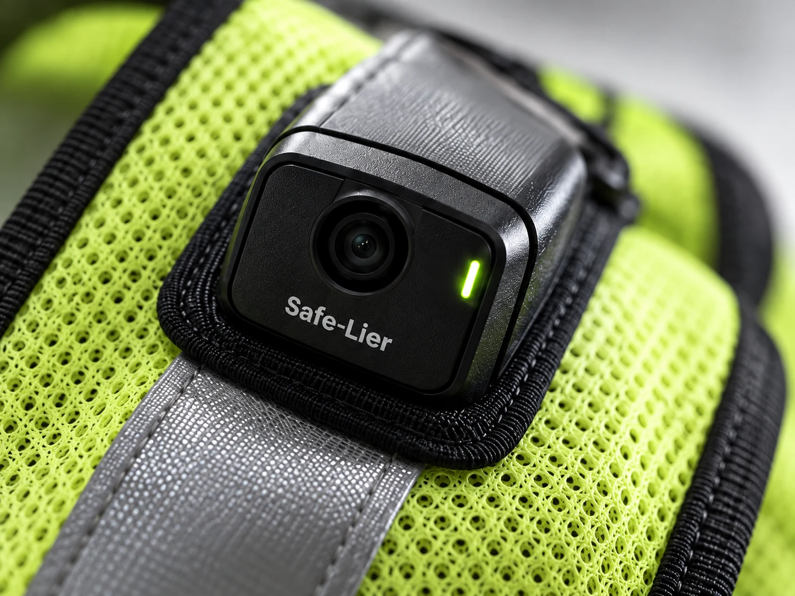

360° 접근 위험 감지
전·후·좌·우 4방향 거리 센서가 작업자 주변 위험 반경으로 접근하는 물체를 감지합니다.
SOLUTION & TECHNOLOGY
지게차·트럭·굴착기의 접근 위험을 감지하고,
조끼의 LED·경고음으로 작업자에게 직접 알리는 안전장치.

HOW SAFE-LIER WORKS
조끼의 센서와 카메라가 주변을 감지하고,
작업자의 스마트폰 AI가 충돌 위험을 판단합니다.
그 결과를 조끼의 빛과 소리로 직접 알립니다.

제공 소개자료의 AI 생성 개발 개념 이미지 · 화면의 번호를 눌러보세요
어디서 감지하나요?작업자가 입은 조끼의 거리 센서·카메라
어디서 판단하나요?작업자 스마트폰의 온디바이스 AI
누가 경고를 받나요?조끼를 입은 작업자가 LED·경고음으로 직접
개발 목표 기준 설명입니다. 감지 성능·경고 지연시간은 통제 시험과 현장 실증으로 검증할 예정입니다. 이미지의 빛·감지 영역은 작동 원리를 설명하기 위한 시각화입니다.
EXPERIENCE SAFE-LIER
앞을 보고 있는 작업자, 뒤에서 다가오는 장비.
현장을 돌려보고 장비를 움직이며
감지·판단·경고의 흐름을 확인해보세요.
보이지 않는 뒤쪽의 위험, 가까워지기 전에 알려줍니다.
드래그로 회전 · 방향키로 시점 조절
큰 원 진입 시 AI 판단, 작은 원 도달 전 직접 경고의 흐름을 확인해보세요.
BUILD YOUR SCENARIO
작업자의 뒤쪽 사각지대에서 접근합니다.
큰 원에서 AI 판단 → 작은 원 전에 경고.
작동 흐름 이해를 위한 개념 시뮬레이션입니다. 실제 센서·AI 판단 결과가 아니며, 화면의 이동 거리와 재생 속도는 제품의 감지 범위·응답 성능을 나타내지 않습니다.

CLOSER TO SAFETY
전·후·좌·우 4방향 거리 센서가 작업자 주변 위험 반경으로 접근하는 물체를 감지합니다.
스마트폰 AI가 지게차·트럭·굴착기 등 이동장비를 인식하고 충돌 위험 여부를 판단하도록 개발합니다.
위험 판단 즉시 조끼의 LED와 경고음이 작동해 작업자가 위험을 바로 인지하도록 설계합니다.
CCTV·관제 서버·차량 장치 추가 설치 없이 조끼 착용과 스마트폰 연결로 사용할 수 있도록 설계합니다.
개발 목표 기준의 설명입니다. 감지 성능과 경고 지연시간은 통제 시험·현장 실증으로 검증할 예정입니다.

ONE WORKER, ONE SET
1세트는 센서 단말 4개와 스마트폰 앱·온디바이스 AI로 구성합니다. 어깨 전·후·좌·우의 접근 위험을 감지하고, 작업자가 보유한 스마트폰과 연결합니다. 조끼 등 착용 구조는 현장 조건에 따라 협의합니다.

INTELLIGENCE, ON YOUR PHONE
거리 센서가 접근을 감지하면 해당 방향의 카메라가 활성화됩니다. 영상은 Wi-Fi로, 거리·방향 정보는 BLE로 전송됩니다. 스마트폰의 AI가 지게차·트럭·굴착기 등 이동장비와 충돌 위험 여부를 판단하도록 개발합니다.

A WARNING THAT REACHES YOU
위험 판단 후 조끼의 LED와 경고음으로 작업자에게 직접 알립니다. 관제실과 관리자를 거치는 경로를 줄이고, 작업자가 위험을 인지해 대피하도록 돕는 것이 목표입니다.
경고 지연시간·인지율은 3개월차 통제 시험에서 측정할 예정입니다.
FROM THE FIELD
안전관리 담당자
심층 인터뷰 완료
관제실에서 관리자를 거쳐 전달되는 사이 대응이 늦어질 수 있습니다. 높은 소음과 작업 몰입은 스피커 경고의 인지를 어렵게 합니다.
CCTV·관제 시스템의 구축 비용과 설비 공사, 개인정보 보호 정책과 노조의 반대, 노후 설비 연동에 따른 생산라인 중단이 장벽입니다.
차량별 장치 설치와 유지관리, 오인식에 따른 운전자 피로, 관리자가 현장으로 찾아가 경고해야 하는 업무 부담이 있습니다.
인터뷰 대상 · 로버트보쉬코리아 세종공장 / 한솔제지 천안공장 / HD현대인프라코어 인천공장
자체 조사 · 위 기업은 인터뷰 대상이며 확정 고객사 또는 협력사를 의미하지 않습니다.
CCTV → 서버 AI → 관제실 → 관리자·스피커 → 작업자
센서 감지 → 스마트폰 AI 판단 → 작업자 직접 경고
LED · 경고음| 비교 항목 | 고정형 CCTV 기반 AI | 차량 부착형 시스템 | Safe-Lier |
|---|---|---|---|
| 도입 단위·비용 | 현장 인프라 구축수천만 원 규모 추정 | 차량별 구매·설치차량당 수백만 원 추정 | 작업자 1인 1세트199만 원 또는 월 7.6만 원 / 36개월 |
| 설치·인프라 | 카메라·전원·통신망 구축현장 공사와 유지관리 | 장치 부착·전원 연결차량마다 설치 반복 | 조끼 착용 + 스마트폰 연결별도 현장 인프라 추가 설치 없이 개발 |
| 감지 범위 | 카메라 설치 구역고정 화각 밖·적재물 뒤 사각지대 | 차량 중심 감지센서 방향·높은 적재물에 따라 제한 | 작업자 중심 360°전·후·좌·우 4방향 센서 |
| 판단·알림 | 관제실·관리자 경유CCTV → 서버 AI → 관제실 → 관리자·스피커 → 작업자 | 운전자 중심 경고작업자 경고는 제품별 상이 | 온디바이스 AI → 직접 경고센서 → 스마트폰 AI → 조끼 LED·경고음 |
제공 소개자료 p.6의 기획 단계 비교. 비교 대상 예시: 한화비전 공장안전 AI팩·세이지 SAFETY, (주)경우시스테크. 경쟁 제품 비용은 일반적 구축 규모 추정이며 실제 견적과 다릅니다. Safe-Lier 가격은 기획안, 부가세 별도.
소개자료 p.2에 기재된 2023년 전산업 사고사망만인율은 한국 0.39명으로, 자료가 비교한 OECD 경제 10대국 중 2위입니다. 해당 10개국 평균 0.24명의 약 1.6배입니다. 비교 수치: 캐나다 0.5, 미국 0.37, 프랑스 0.35, 이탈리아 0.2, 스페인 0.17, 호주 0.14, 일본 0.13, 독일 0.07, 영국 0.04명.
2023년 재해조사 사고사망 598명 중 ‘부딪힘’은 79명(13.2%)으로 사고유형별 2위입니다. 2017–2021년 50인 미만 제조업 사망사고 기인물 중 지게차가 61명으로 1위라는 분석을 인용합니다.
제공 소개자료의 과거 통계로, 통계별 집계 기준이 다릅니다. 원자료 표기: 한국건설산업연구원 건설동향브리핑 1019호(2025.8, 2023년 기준), 고용노동부 2023년 재해조사 대상 사망사고 잠정결과(2024.3.7), 고용노동부 50인 미만 제조업 사망사고 분석(2022.10).
OUR NEXT STEPS
지금은 시제품을 만드는 단계입니다.
6개월의 개발과 검증을 거쳐
현장 실증으로 나아갑니다.
01—02 MONTH / 계획
부품 구매, 단말 4개의 조끼 장착, 앱 연동과 공개 데이터 기반 초기 AI 모델을 구성합니다.
03—04 MONTH / 계획
전방·후방 접근 각 10회 시험 후 AI·펌웨어·장착 구조와 전원 효율을 개선합니다.
05—06 MONTH / 계획
구매 관계자 시연과 가격 반응 확인, 맞춤 케이스 견적과 후속 실증 범위를 협의합니다.
검증 계획: 전방·후방 2가지 통제 시나리오 × 각 10회 시험 + 고객 11명 검증. 핵심 지표는 감지 → 경고 지연시간이며, 감지 여부·오경보를 함께 기록합니다. 경고 지연시간·인지율은 3개월차 통제 시험에서 측정할 예정입니다.
목표 산출물 기능 시제품 1세트 / 통제 시험 보고서 / 시연 영상 / 후속 PoC 참여의향서
LET’S MAKE WORK SAFER
현장 조건에 맞는 PoC·실증 가능성을 함께 이야기합니다.